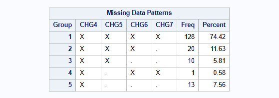
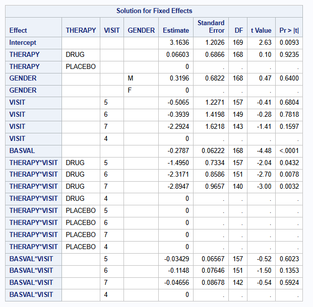
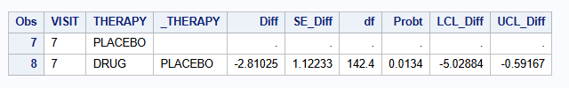
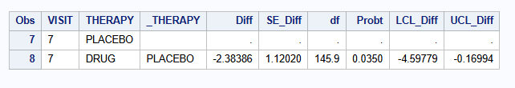
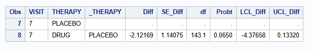
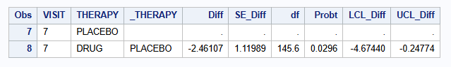
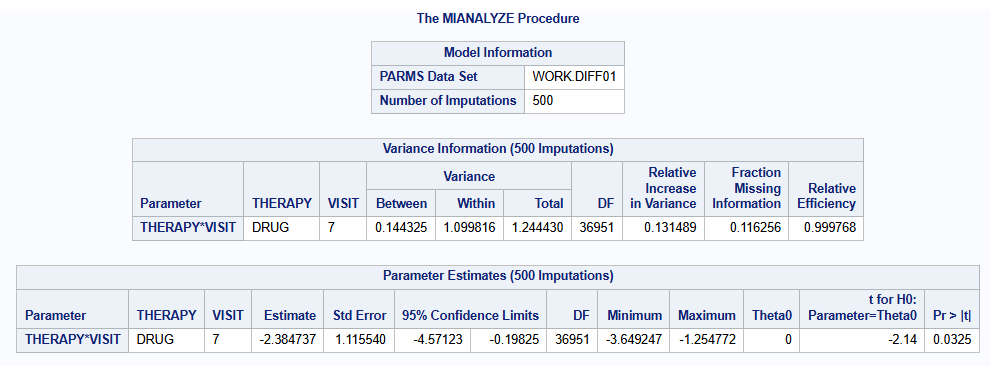

proc print data=dat (obs=10);
var PATIENT GENDER THERAPY RELDAYS VISIT BASVAL HAMDTL17 CHANGE;
run; <Reference-Based Multiple Imputation (joint modelling): Continuous Data>
Reference-based multiple imputation (rbmi)
Methodology introduction
Reference-based multiple imputation methods have become popular for handling missing data, as well as for conducting sensitivity analyses, in randomized clinical trials. In the context of a repeatedly measured continuous endpoint assuming a multivariate normal model, Carpenter et al. (2013) proposed a framework to extend the usual MAR-based MI approach by postulating assumptions about the joint distribution of pre- and post-deviation data. Under this framework, one makes qualitative assumptions about how individuals’ missing outcomes relate to those observed in relevant groups in the trial, based on plausible clinical scenarios. Statistical analysis then proceeds using the method of multiple imputation (Rubin 1976, Rubin 1987).
In general, multiple imputation of a repeatedly measured continuous outcome can be done via 2 computational routes (Roger 2022):
Stepwise: split problem into separate imputations of data at each visit
requires monotone missingness, such as missingness due to withdrawal
conditions on the imputed values at previous visit
Bayesian linear regression problem is much simpler with monotone missing, as one can sample directly using conjugate priors
One-step approach (joint modelling): Fit a Bayesian full multivariate normal repeated measures model using MCMC and then draw a sample.
Here, we illustrate reference-based multiple imputation of a continuous outcome measured repeatedly via the so-called one-step approach.
Five Macros
The five macros (Roger 2022), available at LSHTM DIA Missing Data, fit a Bayesian Normal RM model and then impute post withdrawal data under a series of possible post-withdrawal profiles including J2R, CIR and CR as described by Carpenter et al. (2013). It then analyses the data using a univariate ANOVA at each visit and summarizes across imputations using Rubin’s rules.
The following standard and reference-based multiple imputation approaches will be illustrated here:
* MAR (Missing At Random)
* CIR (Copy Increment from Reference)
* J2R (Jump to Reference)
* CR (Copy Reference)Data used
A publicly available example dataset from an antidepressant clinical trial of an active drug versus placebo is used. Overall, data of 172 patients is available with 88 patients receiving placebo and 84 receiving active drug. The same data is used for the R part.
The relevant endpoint is the Hamilton 17-item depression rating scale (HAMD17) which was assessed at baseline and at weeks 1, 2, 4, and 6 (visits 4-7). Study drug discontinuation occurred in 24% (20/84) of subjects from the active drug and 26% (23/88) of subjects from placebo. All data after study drug discontinuation are missing.

The number of patients per visit and arm are:
proc freq data=dat;
table VISIT*THERAPY / norow nocol nopercent nocum;
run;
The mean change from baseline of the endpoint (Hamilton 17-item depression rating scale, HAMD17) per visit per treatment group using only the complete cases are:
proc means data=dat n mean nonobs;
class VISIT THERAPY;
var CHANGE;
run;
The missingness pattern is show below. The incomplete data is primarily monotone in nature. 128 patients have complete data for all visits (all 1’s at each visit). 20, 10 and 13 patients have 1, 2 or 3 monotone missing data, respectively. Further, there is a single additional intermittent missing observation (patient 3618).
proc transpose data=dat out=HAMD_wide(drop=_NAME_) prefix=CHG;
by PATIENT THERAPY BASVAL;
id VISIT;
var CHANGE;
run;
proc mi data=HAMD_wide nimpute=0 displaypattern=NOMEANS;
var CHG4 CHG5 CHG6 CHG7;
run;
Complete case analysis
A complete case analysis is performed using mixed model for repeated measures (MMRM) with covariates: treatment [THERAPY], gender [GENDER], visit [VISIT] as factors; baseline score [BASVAL] as continuous; and visit-by-treatment [THERAPY * VISIT] interaction, and visit-by-baseline [BASVAL * VISIT] interaction. An unstructured covariance matrix is used. The MIXED procedure is used.
proc mixed data=dat method=reml;
class THERAPY(ref="PLACEBO") VISIT(ref="4") PATIENT GENDER(ref="F");
model CHANGE = THERAPY GENDER VISIT BASVAL THERAPY*VISIT BASVAL*VISIT /s ddfm=satterthwaite;
repeated VISIT / type=UN subject=PATIENT r;
lsmeans THERAPY*VISIT / diff=control("PLACEBO" "7") cl;
run;The parameter estimates of the fixed effects are:

The estimated unstructured covariance matrix parameters are:

The treatment difference at visit 7 is of interest, and is estimated to be -2.829 (se=1.117) with 95% CI of [-5.033 to -0.624] (p=0.0122).

Five macros: MAR approach
As described above, the so-called five macros will be used for the SAS implementation. The five macros are available at LSHTM DIA Missing Data under Reference-based MI via Multivariate Normal RM (the “five macros and MIWithD”). For the details, see the use guide available in the download of the five macros.
Applying the five macros for reference-based multiple imputation entails the sequential run of the following:
Part1A declares the parameter estimation model and checks consistency with the dataset. It builds a master dataset which holds details of the current job (run of the macros in sequence). It also builds indexes for the classification variables, which may be either numeric or character.
Part1B fits the parameter estimation model using the MCMC procedure and draws a pseudo-independent sample from the joint posterior distribution for the linear predictor parameters and the covariance parameters.
Part2A calculates the predicted mean under MAR, and under MNAR for each subject based on their withdrawal pattern once for each draw of the linear predictor parameter estimates. The choice of MNAR is controlled by the method used, which may vary from subject to subject.
Part2B imputes the intermediate missing values using MAR and the trailing missing values using MNAR, by deriving the conditional distribution for the missing values conditional on the observed values and covariates, using the appropriate sampled covariance parameter estimates.
Part3 carries out a univariate ANOVA analysis at selected time points usually based on the same covariates as the parameter estimation model. It then combines the least-squares means and their differences using the MIANALYZE procedure to provide final results. It is in this macro which handles the Delta methods.
Most of the computation time is spent in the Part1B macro where the MCMC procedure is used to generate a sample from the posterior distribution of the full set of model parameters. These are stored away and can be used repeatedly by calling the later macros over and over again using different imputation methods.
To perform reference-based multiple imputation using MAR approach to following code is used
%part1A(jobname = HAMD,
Data=dat,
Subject=PATIENT,
RESPONSE = CHANGE,
Time = VISIT,
Treat = THERAPY,
Covbytime = BASVAL,
Catcov = GENDER);
%part1B(jobname = HAMD,
Ndraws = 500,
thin = 10,
seed = 12345);
%part2A(jobname = HAMD_MAR,
inname = HAMD,
method = MAR);
%part2B(jobname = HAMD_MAR,
seed = 12345);
%part3(Jobname = HAMD_MAR,
anref = PLACEBO,
Label = MAR);To print the results of the contrast at week 7
proc print data=HAMD_MAR_OUT;
where VISIT = "7";
var VISIT THERAPY _THERAPY Diff SE_Diff df Probt LCL_Diff UCL_Diff;
run;
Five macros: MNAR CR approach
To perform reference-based multiple imputation using Copy Reference (CR) approach the following changes are needed in part2A of the 5 macros
%part2A(jobname = HAMD_CR,
inname = HAMD,
method = CR,
ref = PLACEBO);The results for M=500 imputations are

Five macros: MNAR J2R approach
To perform reference-based multiple imputation using Jump to Reference (J2R) approach the following changes are needed in part2A of the 5 macros
%part2A(jobname = HAMD_J2R,
inname = HAMD,
method = J2R,
ref = PLACEBO);The results for M=500 imputations are

Five macros: MNAR CIR approach
To perform reference-based multiple imputation using Copy Increments in Reference (CIR) approach the following changes are needed in part2A of the 5 macros
%part2A(jobname = HAMD_CIR,
inname = HAMD,
method = CIR,
ref = PLACEBO);The results for M=500 imputations are

Summary of results
In the table we present the results of the different imputation strategies (and with varying number, M, of multiple imputation draws). Note that some results can be slightly different from the results above due to a possible different seed. The table show the contrast at Visit 7 between DRUG and PLACEBO [DRUG - PLACEBO]:
| Method | Estimate | SE | 95% CI | p-value |
|---|---|---|---|---|
| Complete Case | -2.829 | 1.117 | -5.035 to -0.623 | 0.0123 |
| MI - MAR (M=500) | -2.810 | 1.122 | -5.029 to -0.592 | 0.0134 |
| MI - MAR (M=2000) | -2.816 | 1.128 | -5.047 to -0.586 | 0.0137 |
| MI - MAR (M=5000) | -2.825 | 1.123 | -5.045 to -0.605 | 0.0130 |
| MI - MNAR CR (M=500) | -2.384 | 1.120 | -4.598 to -0.170 | 0.0350 |
| MI - MNAR CR (M=2000) | -2.390 | 1.118 | -4.599 to -0.180 | 0.0342 |
| MI - MNAR CR (M=5000) | -2.400 | 1.115 | -4.604 to -0.196 | 0.0330 |
| MI - MNAR J2R (M=500) | -2.122 | 1.141 | -4.377 to 0.133 | 0.0650 |
| MI - MNAR J2R (M=2000) | -2.135 | 1.140 | -4.388 to 0.117 | 0.0630 |
| MI - MNAR J2R (M=5000) | -2.144 | 1.136 | -4.389 to 0.101 | 0.0611 |
| MI - MNAR CIR (M=500) | -2.461 | 1.120 | -4.674 to -0.248 | 0.0296 |
| MI - MNAR CIR (M=2000) | -2.469 | 1.118 | -4.679 to -0.260 | 0.0287 |
| MI - MNAR CIR (M=5000) | -2.481 | 1.115 | -4.684 to -0.278 | 0.0276 |
Discussion
A note on computational time. The total running time (including data loading, setting up data sets, MCMC run, imputing data and analysis MI data) for M=500 was about 23 seconds on a personal laptop. It increased to about 44 seconds for M=2000. Computational time was similar across difference imputation strategies.
With a small number of Ndraws in part1B a warning could pop-up “There is still significant autocorrelation after 5 lags, and the effective sample size for the parameter might not be estimated accurately.”. Increasing the number of Ndraws will mostly solve this warning. For example, for this data example, this message is received when setting Ndraws below 100.
Appendix 1: mmrm as analysis model
Part 3 of the 5 macros carries out a univariate ANOVA analysis at selected time points usually based on the same covariates as the parameter estimation model. It then combines the least-squares means and their differences using Rubin’s formula in a calculation similar to that in the MIANALYZE procedure to provide final results.
Since, all imputed datasets are readily available (after part2B), another possibility is to analyse each imputed dataset using the analysis model of your choice, and combining the results using PROC MIANALYZE. For example, suppose an MMRM should be fit on each imputed dataset:
data HAMD_CR_DATAFULL;
set HAMD_CR_DATAFULL;
_Imputation_ = draw;
run;
proc mixed data=HAMD_CR_DATAFULL ;
by _Imputation_;
class THERAPY(ref="PLACEBO") VISIT(ref="4") PATIENT GENDER(ref="F");
model CHANGE = THERAPY GENDER VISIT BASVAL THERAPY*VISIT BASVAL*VISIT /s ddfm=satterthwaite;
repeated VISIT / type=UN subject=PATIENT r;
lsmeans THERAPY*VISIT / diff=control("PLACEBO" "7") cl;
ods output Diffs=diff01;
run;
proc mianalyze parms=diff01(where=(VISIT="7"));
class THERAPY VISIT;
modeleffects THERAPY*VISIT;
ods output ParameterEstimates=res01;
run;The results for M=500 imputations are

Reference
Carpenter JR, Roger JH & Kenward MG (2013). Analysis of Longitudinal Trials with Protocol Deviation: A Framework for Relevant, Accessible Assumptions, and Inference via MI. Journal of Biopharmaceutical Statistics 23: 1352-1371.
Five macros: Drug Information Association (DIA) Missing Data Working Group (2012). Reference-based MI via Multivariate Normal RM (the “five macros and MIWithD”). London School of Hygiene and Tropical Medicine DIA Missing Data.
PROC MIANALYZE, SAS Institute Inc. (2017). SAS/STAT® 14.3 User’s Guide. Cary, NC: SAS Institute Inc.
Roger J (2022, Dec 8). Other statistical software for continuous longitudinal endpoints: SAS macros for multiple imputation. Addressing intercurrent events: Treatment policy and hypothetical strategies. Joint EFSPI and BBS virtual event.
Rubin DB (1976). Inference and Missing Data. Biometrika 63: 581–592.
Rubin DB (1987). Multiple Imputation for Nonresponse in Surveys. New York: John Wiley & Sons.